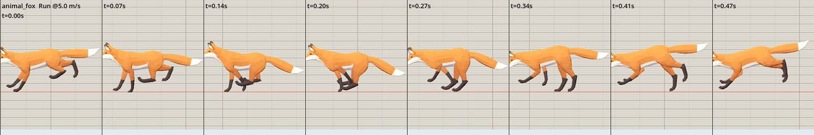

The variant removes one vertical location curve from the base of the tail in the 14-frame Run clip. The original GLB remains untouched. Both strips use the game's fox rig, model scale, and 5 m/s movement preview.
30.3% → 1.7%Maximum Tail1 chain stretch
2 FAIL → 1 FAILClip checks; remaining Walk slip is 27 cm/s
0.127 mSource vertical displacement on Tail1
0.51 mFox height at source scale
Source Run
Original Quaternius CC0 GLB.

Tail cleaned
Derived GLB used by the fox configuration in this branch.